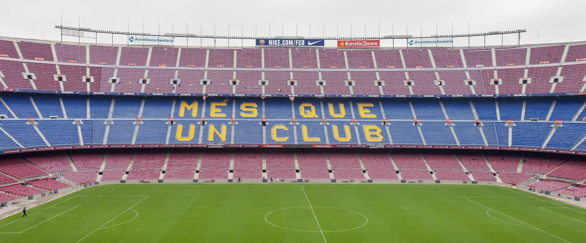
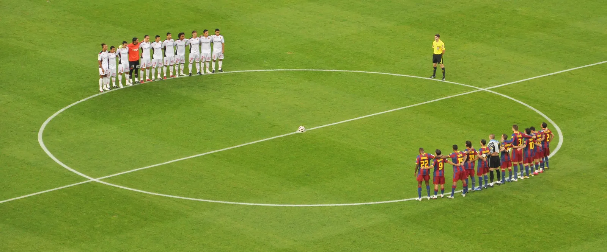

Cada risca é uma época simulada, com a cor do campeão.


As goleadas são para durar?
Golos marcados
Golos e xG em cada jogo
Golos sofridos
Golos sofridos e xG do adversário em cada jogo
Classificação e projeção
À esquerda, a classificação de hoje. À direita, como a época pode acabar: os pontos médios nas simulações e o intervalo onde ficam 90% delas. Quanto mais larga a barra, maior a incerteza.
Hipóteses de título, jornada a jornada
Depois de cada jornada, o modelo volta a ser treinado com os resultados novos e a época é simulada outra vez.
Próxima jornada
As previsões ficam guardadas no repositório antes do primeiro jogo, com data e hora, para se poder confirmar depois se acertaram.


O modelo acerta?
Erro das previsões
Calibração
Probabilidade prevista e frequência real. Se o modelo fosse perfeito, os pontos ficavam em cima da diagonal.
Como funciona
- DadosResultados, remates, xG e odds de La Liga e da Segunda Divisão desde 2021/22, de football-data.co.uk.
- ModeloUm modelo Dixon-Coles dá a cada equipa uma força de ataque e outra de defesa. Os jogos recentes contam mais: um jogo com um ano conta metade.
- SimulaçãoOs jogos que faltam são simulados 10 000 vezes. Em cada simulação, as forças variam um pouco, porque as estimativas têm margem de erro.
- ValidaçãoAntes de ser usado, o modelo previu três épocas completas, semana a semana, só com os jogos já disputados. Os resultados foram comparados com as casas de apostas.